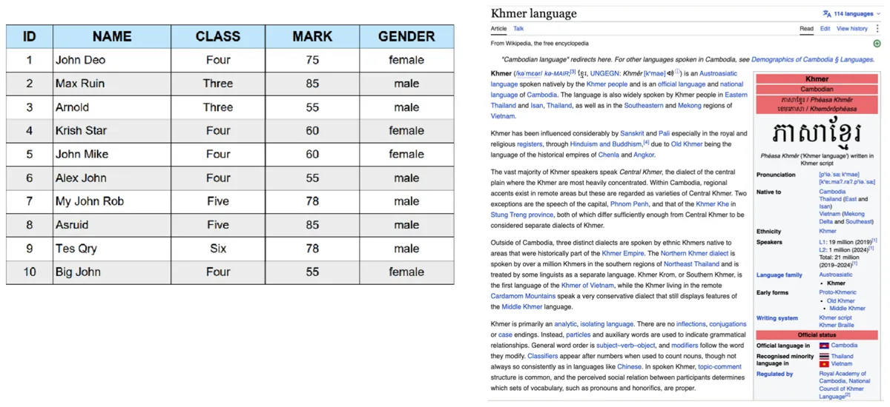
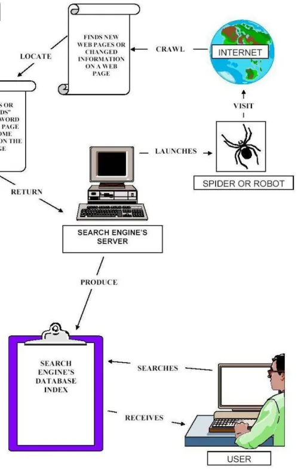
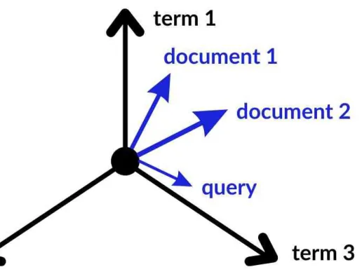
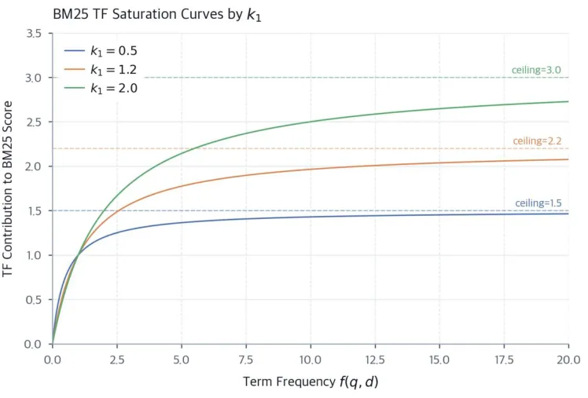

From Substring to NDCG
Hi. Let's build a search engine together, one honest mistake at a time. We start with the dumbest thing that could work (look for the query text inside every document), watch it fail, and fix each failure with a real IR idea. By the end you'll be ranking documents with BM25, proving with numbers which ranker is better, crawling the web for a collection of your own, and reading the map its links draw.
One collection, all the way through. Every example and every live demo on this page uses the same 30 short documents (d01…d30) from the labs: guesthouses in Phnom Penh, a ball python, Java the island, an automobile engine, and so on. Some are planted on purpose to trip up naive search. Chapter 5 then steps outside and collects new documents from Books to Scrape, a site built for practice, and Chapter 6 crawls the lecture's seven-page toy site. Numbers quoted from the labs are the ones your notebooks printed.
- Chapter 1 asks what IR is and why a database
LIKEquery is not a search engine. (Lesson 1, Lab 1) - Chapter 2 cleans text into tokens and builds an inverted index so we stop reading every document. (Lesson 2, Lab 2)
- Chapter 3 turns a set of matches into a ranked list with TF-IDF and BM25. (Lesson 3, Lab 3)
- Chapter 4 measures whether a ranking is any good: P@k, AP, MAP and NDCG. (Lesson 4, Lab 4)
- Chapter 5 goes back to the start of the pipeline and collects documents from the web, with Beautiful Soup and then a Scrapy crawler. (Lesson 5, Lab 5)
- Chapter 6 asks which URL to fetch next and what the links tell us: the frontier, URL normalization, spider traps, and the web graph with its degrees and components. (Lesson 6)
What Is Information Retrieval?
1.1 The definition
Start with a small experiment from the first lecture: type the same query, say coffee near me, into two different search services and compare the top three results. They won't match. Both engines read the same web, yet they disagree on what's "best". That disagreement is what this course is about.
Information retrieval (IR) is finding material (usually documents) of an unstructured nature (text, images, audio) that satisfies an information need, from large collections.
Each of the three bold words carries weight:
- Unstructured. A sentence has no columns. "Budget guesthouses in Phnom Penh offer clean rooms" doesn't have a
pricefield you can sort by. - Information need. The thing in the person's head. It is not the same as the words they type.
- Large collections. Millions or billions of documents, so anything that reads every one per query is too slow.

Search is everywhere: the web, email, your phone, online shops, code search, legal and medical papers, company files. Even chatbots that "read your documents" begin with a retrieval step. That pattern is called RAG (retrieval-augmented generation), and we'll build up to it in Sessions 9–10.
1.2 Core vocabulary
The lecture gives one chain of words you should be able to say in your sleep:
| Term | Meaning | In our lab collection |
|---|---|---|
| Document | One unit you can return | d12: "Buses run every hour from Phnom Penh to Siem Reap…" |
| Collection / corpus | All the documents you search | The 30 documents |
| Information need | What the person actually wants | N3: "Travel from Phnom Penh to Siem Reap" |
| Query | The words they type to express it | travel Phnom Penh Siem Reap |
| Relevance | Does a document satisfy the need? | d12 yes; d29 (a museum in Phnom Penh) no |
Asking a librarian. Your need is "I have to get to Siem Reap tonight." What you actually say is "bus Siem Reap?" A good librarian answers the need, not just the words. They might hand you a ferry timetable even though you never said "ferry".
1.3 Relevance
Relevance sounds obvious, but it shifts. It depends on the user, the task, the context and even the time (yesterday's bus timetable is useless today).
- Topical relevance means "it's about the right subject". Usefulness means "it actually helps me". A Wikipedia page about Siem Reap is topical; a page listing tonight's buses is useful.
- Judgments can be binary (relevant or not) or graded (how relevant, e.g. 0–3). We'll need graded ones in Chapter 4.
- Judgments are made by people. A computer can't decide relevance for us; that's the whole problem.
1.4 Why is it hard?
The biggest single enemy has a name: vocabulary mismatch. People use different words for the same thing, and the same word for different things.
| Problem | Example | Seen in our collection |
|---|---|---|
| Synonyms (different words, same meaning) | car / automobile / vehicle; cheap / budget / affordable | Query car: no document says "car". d14 says "vehicles", d15 says "automobile". |
| Ambiguity (same word, different meanings) | Java, Python, Apple | d04 Python the language vs d05 a ball python (a snake). d06 Java the language vs d07 Java the island. |
| Short queries, long documents | 2 words vs 2,000 words | Our docs are short (~9.5 tokens), so this hits us in Chapter 3. |
| Mixed languages / scripts | Khmer has no spaces between words | d26 says exactly this; Lab 1 Part 7 shows it breaking search. |
1.5 IR vs database queries
You already know SQL, so it's tempting to think SELECT … WHERE text LIKE '%cat%' is a search engine. Here's the lecture's comparison:
| IR | Database query | |
|---|---|---|
| Data | Unstructured text | Structured records |
| Query | Keywords or a question | SQL |
| Matching | Partial and approximate | Exact |
| Result | A ranked list | A set of rows |
| Success | Degrees of relevance | Right or wrong |
IR shows up in web search, recommender systems, question answering and RAG.
1.6 Anatomy of a search system
Every search engine splits its work into two halves:
Offline (done once, ahead of time)
- Collect documents: crawl, feeds, files.
- Preprocess: clean, tokenize, normalize.
- Index: build a structure that makes lookup fast.
Why offline? You pay the cost once and then answer many queries quickly.
Online (every single query)
- Interpret the query.
- Match it against the index.
- Score and rank.
- Present results with snippets.
Users expect this in a fraction of a second.

A third piece closes the loop: feedback from logs, clicks and evaluation tells you what to improve. The course follows this pipeline: Session 2 builds the index, Session 3 the ranking, Session 4 the evaluation, Sessions 5–6 data collection, Session 8 links, Sessions 9–10 neural search and RAG.
That split into offline and online exists because people won't wait. In 2009 Google slowed its results on purpose by 100 to 400 milliseconds, far too little to notice consciously, and people searched 0.2% to 0.6% less. You can't scan documents in that time budget, so the slow work has to be done ahead of time.
1.7 A first look at precision and recall
How do we know a search engine works? The lecture's example: the collection holds 20 relevant documents. Your system returns 10 results, and 6 of them are relevant.
Precision is about the quality of what you returned. Recall is about what you missed.
Fishing with a net. Precision is "how much of my catch is actually fish, not boots?" Recall is "how many of the fish in the lake did I catch?" A tiny net gets high precision and low recall. A giant net gets the opposite.
1.8 As demonstrated in Lab 1: three naive searches
Lab 1 builds the simplest search engines possible and measures where they break. There are three versions.
Lab 1 · Part 2: substring scan
Check whether the query text appears anywhere inside each document.
for id, text in docs.items():
if query.lower() in text.lower():
ids.append(id)
Query: 'cat' -> 4 result(s) d06 … enterprise applications … d16 Her cat sleeps all day … d17 … catalog … category … d18 … concatenate two strings …
Only d16 is about a cat. The others contain the letters c-a-t. Substring matching has no idea what a word is.
This exact bug has a famous victim. In 1996 AOL stopped residents of Scunthorpe, a town in England, from creating accounts, because their town's name contains a rude word as a substring. It's now called the Scunthorpe problem, and filters still trip over it. Your cat inside category is the same mistake.
Lab 1 · Parts 3–4: whole words, then SQL LIKE
Part 3 splits text into words with re.findall(r"\w+", text.lower()) and matches whole words. cat now returns only d16. But travel Phnom Penh Siem Reap gives 0 results with AND (no document says "travel") and 4 with OR, listed in id order with no hint which is best.
Part 4 loads the same docs into SQLite and runs WHERE text LIKE '%cat%'. The lab checks it against the substring scan for five queries: identical every time. A LIKE query is a substring scan, with the same false matches.
Try all three yourself. Press Run and watch the scan read every single document, one after another, to answer one query. Matches are highlighted so you can see why each document came back. Documents tagged rel are the ones Lab 1 judged relevant to the information need.
Watch a naive search scan all 30 documents
What the evaluation table showed
Lab 1 Part 5 judged six information needs by hand and computed precision and recall for every method. Three rows tell the whole story:
| Need · query | Method | Precision | Recall | What went wrong |
|---|---|---|---|---|
N5 · cat | substring | 0.25 | 1.00 | Found the cat, plus three "cat-inside-a-word" accidents |
N4 · car | every method | n/a | 0.00 | Vocabulary mismatch: relevant docs say "automobile" and "vehicles" |
N1 · cheap hotel | every method | 1.00 | 0.33 | Missed d01 "budget guesthouses" and d30 "affordable accommodation" |
Lab 1 · Part 6: does it scale?
The lab timed one scan for "rice" over bigger and bigger synthetic collections:
1,000 docs: scan 0.2 ms 100,000 docs: scan 14.3 ms 10,000 docs: scan 1.7 ms 500,000 docs: scan 74.9 ms
Ten times more documents means about ten times more time. That's linear growth, written \(O(N)\). Scaled up to a billion web pages: \(0.0749\,\text{s} \times \frac{10^9}{500{,}000} \approx 150\) seconds, 2.5 minutes for one query. Users expect a fraction of a second.
Lab 1 · Part 7: Khmer text
Khmer is written without spaces. Splitting ភ្នំពេញជារាជធានីនៃប្រទេសកម្ពុជា on spaces gives one giant "word", so whole-word search finds nothing. After running a segmenter (khmernltk.word_tokenize) you get ['ភ្នំពេញ', 'ជា', 'រាជធានី', 'នៃ', 'ប្រទេស', 'កម្ពុជា'] and whole-word search works again. Tokenization is a language-specific decision, which is the opening topic of Chapter 2.
A database LIKE query is a substring scan. It matches letters, not words (cat ⊂ category). It can't bridge synonyms (car vs automobile). It returns an unordered set. And it reads every document per query, so its cost grows linearly. Chapter 2 fixes the first and last problems, Chapter 3 fixes ordering, and synonyms wait for later sessions.
Check yourself: Chapter 1
Preprocessing, the Inverted Index and Boolean Retrieval
2.1 Today's pipeline
The second lecture is one assembly line. Each arrow is one part of Lab 2:
One rule matters more than any single step: the query goes through exactly the same pipeline as the documents. If documents are stemmed and the query isn't, "running" will never meet "run".
2.2 Tokenization
Tokenization splits raw text into tokens: usually words, usually lowercased.
"Cheap hotel deals"→["cheap", "hotel", "deals"]- Khmer needs a real segmenter:
"និស្សិតសាលាស៊ីអេឌីធី"→['និស្សិត', 'សាលា', 'ស៊ី', 'អេឌីធី']. Tools: NLTK for English;khmer-nltkorkhmer-segmenterfor Khmer.
Tokenization looks mechanical, but it forces decisions:
| Decision | If you keep it | If you drop it |
|---|---|---|
| Numbers? | "2 bedrooms" stays searchable | The 2 in d20 vanishes (Lab 2's tokenizer does this) |
| Split hyphens? | "tuk-tuk" stays one token | "hand-written" becomes "hand" + "written" |
| Keep case? | "Apple" (company) ≠ "apple" (fruit) | "Python" and "python" merge, which helped in Lab 2 |
Every tokenization choice trades recall against precision. Merging more forms together finds more (recall up) but also confuses more (precision down).
2.3 Stop words
Stop words are very frequent words that carry little meaning on their own: the, is, of, and, to. Removing them shrinks the index and speeds up ranking. In Lab 2 Part 2, removing a 45-word stop list cut the collection from 405 tokens to 284, about 30% smaller.
The lecture walks one sentence through it:
Look what happened: "I do not like apple" became [like, apple]. The meaning flipped. Stop-word removal also hurts on:
- Phrase queries: "to be or not to be" becomes nearly empty.
- Names and titles: "The Who" (a band), "Vitamin A".
- Direction: "flights to Phnom Penh" and "flights from Phnom Penh" turn into the same query.
For Khmer there's a community stop-word dictionary (KSWv2) in the lecture notes.
2.4 Stemming and lemmatization
Both are forms of normalization: making different forms of a word look the same so they match.
Stemming cuts words
Rule-based suffix chopping. Fast, no dictionary, and the result isn't always a real word.
Lemmatization understands words
Uses a dictionary and grammar to find the base form (the lemma). Slower, but handles irregular words.
The stemming trade-off
- Over-stemming: unrelated words collapse together. university and universe both become
univers. - Under-stemming: related words stay apart. ran and running never meet, because "ran" has no suffix to cut.
Lab 2 · Part 3: the Porter stemmer
from nltk.stem import PorterStemmer
porter = PorterStemmer()
porter.stem("running") # 'run'
running -> run farms -> farm categories -> categori
ran -> ran farming -> farm category -> categori
runners -> runner farmers -> farmer cats -> cat
Both effects show up at once. categori isn't a word, but that's fine as long as it's consistent. ran stays alone (under-stemming) because only a lemmatizer knows it's the past tense of "run".
Note: Labs 3 and 4 swap Porter for a 15-rule suffix stemmer to keep things transparent. That one turns running into runn, which is why "running" can't find d12's "run" in those labs. The live demos on this page use the Lab 3/4 stemmer.
2.5 Try the pipeline
Type any sentence or load a document, then press Run. The pipeline goes one stage at a time: it checks every token against the stop list (stop words are highlighted, and the matching word lights up in the list below), then shows which suffix rule the stemmer cuts from each word.
Text → tokens → terms, step by step
2.6 The inverted index
Here's the idea that makes search engines fast. Instead of storing "document → words", flip it around and store "word → documents".
An inverted index is a dictionary: term → sorted list of the ids of documents that contain it. That list is called a postings list.
Building it is simple and paid once: for every document, preprocess it, add the document id to the postings list of each unique term, then sort every list.
- A common term (e.g. "language") has a long list.
- A rare term (e.g. "pagerank") has a short, informative list. If a document contains it, that tells you a lot. Hold that thought; it becomes IDF in Chapter 3.
The index at the back of a textbook. You don't read the whole book to find "photosynthesis"; you look it up and get "pages 12, 47, 103". Those page numbers are a postings list, and they're sorted.
Lab 1 worked out that scanning a billion pages would take 2.5 minutes per query. Google says its index is well over 100,000,000 gigabytes, and it answers in a fraction of a second. It can do that because a query only touches the postings lists of its own words. The inverted index isn't an optimisation here. It's the reason web search is possible at all.
Lab 2 · Part 4: build_index
def build_index(docs):
index = {}
for doc_id, text in docs.items():
for term in set(preprocess(text)): # set(): one entry per doc
index.setdefault(term, []).append(doc_id)
for term in index:
index[term].sort() # sorted lists are the key
return index
Vocabulary size: 229 terms (from 405 raw tokens) 'python' -> ['d04', 'd05', 'd18'] 'car' -> [] 'cat' -> ['d16'] 'automobile' (stem 'automobil') -> ['d15']
cat → only d16. The category/catalog problem is gone, fixed by tokenization: "category" is its own token and never equals "cat". But car is still empty. The index can only find words that are literally there.
Watch the index being built
Press Run. Each step takes one term from the current document and appends the document id to that term's postings list. The table tracks twelve terms; everything else is counted in the totals. Notice cambodia and cambodian end up as different terms.
2.7 Boolean retrieval and the merge algorithm
Boolean retrieval combines postings lists with AND, OR and NOT into one answer set:
- A AND B: documents containing both terms (intersection).
- A OR B: documents containing either (union).
- NOT A: every document without A (complement).
Because the lists are sorted, we can intersect two of them in a single left-to-right pass, like zipping two sorted decks of cards. Keep one finger on each list. If the ids match, keep it and move both fingers. Otherwise move the finger on the smaller id. That costs \(O(|p_1| + |p_2|)\), and it never touches document text.
Lab 2 · Part 5: intersect
def intersect(p1, p2):
answer, i, j = [], 0, 0
while i < len(p1) and j < len(p2):
if p1[i] == p2[j]: answer.append(p1[i]); i += 1; j += 1
elif p1[i] < p2[j]: i += 1
else: j += 1
return answer
boolean_and also sorts the lists by length first, so it starts with the shortest. The running answer can never be longer than the shortest list, so every later merge stays small.
Step through a merge
2.8 As demonstrated in Lab 2: is the index worth it?
An index costs time to build. Lab 2 Part 7 measured whether that pays off at 500,000 documents for python AND language:
| Approach | Cost |
|---|---|
| Naive scan, per query | 53.7 ms |
| Build the index, once | 51,553 ms (about 52 s) |
| Merge postings, per query | 6.7 ms |
When does building once beat scanning every time? Set the totals equal for \(q\) queries:
After about eleven hundred queries the index has paid for itself. After that, every query is roughly 8× cheaper. A real engine answers millions of queries a day, so it's an easy win. A collection you search only once, or one that changes constantly, might not be worth indexing.
Lab 2 also re-ran Lab 1's six needs through the index. Lowercasing fixed N2 (Python with a capital P now matches), tokenization fixed N5 (cat), and budget accommodation OR found d01 and d30. Two needs are still broken:
- N4
car: recall 0. This is a vocabulary problem. - N3
travel Phnom Penh Siem Reap: AND gives nothing, OR gives 4 unordered docs with precision 0.25. This is a ranking problem, and Chapter 3 fixes it.
Chapter 2 recap
- Tokenize, remove stop words, stem. Each step is a trade-off between recall and precision.
- Queries must go through the same pipeline as documents.
- An inverted index stores term → sorted postings list.
- Boolean queries are answered by merging postings, not scanning text.
- Index build is paid once; Lab 2's break-even was ~1,098 queries.
- Still broken: synonyms (
car) and ordering (Boolean gives a set).
Check yourself: Chapter 2
Ranking with TF-IDF, Cosine and BM25
3.1 Why ranking matters
Recall where Lab 2 left us. Boolean OR for travel Phnom Penh Siem Reap returned d01, d02, d12, d29, and only d12 is really about that trip. An unordered set can't tell you which one to read first.
- Scale: real collections return thousands or millions of Boolean matches.
- Behaviour: people rarely look past the first few results.
- So the core IR problem is: order documents by estimated relevance to the information need.
Ranked retrieval is simple to describe: score every document, sort by score, return the top k. No more hard yes/no matching; every document gets a real-valued score. The rest of this chapter is about how to compute that score.
How much does order matter? A 2019 Backlinko study of 5 million Google searches found the first organic result took about 32% of clicks, and fewer than 1% of searchers clicked anything on page two. A relevant document at rank 50 might as well not exist. That's why the rest of this chapter is about ordering.
3.2 TF, DF and IDF
Term frequency
\(tf(t,d)\) is how many times term \(t\) appears in document \(d\). Intuition: if doc A says "python" once and doc B says it 8 times, B is probably more about Python.
The problem with raw TF
Some words are everywhere: stop words, or generic words like "offer" and "system". A high count of a word that's in every document isn't special. We need to scale each term by how rare it is across the collection.
Document frequency and inverse document frequency
\(df(t)\) is the number of documents that contain \(t\) at least once (not the total count). Then:
IDF is "log of N over df". Rare term, small df, big IDF. Common term, big df, small IDF. A term that's in every document gets \(\log 1 = 0\): it can't help you tell documents apart.
A high TF-IDF weight needs both: the term is frequent in this document and rare across the collection.
Lab 3 · Parts 1–2: df and idf on our 30 docs
def idf(term):
d = df(term)
return 0.0 if d == 0 else math.log(N / d) # natural log, N = 30
| Term | df | idf = ln(30/df) |
|---|---|---|
hotel, cheap | 1 | 3.401 |
cambodia, offer, siem | 2 | 2.708 |
python, phnom | 3 | 2.303 |
cambodia and offer get the same IDF because they have the same df. IDF only measures rarity. It has no idea that "cambodia" is a topic word and "offer" is a generic verb.
3.3 Documents as vectors, compared by cosine
In the vector space model, every unique term in the collection is one dimension. A document's vector holds its TF-IDF weight in each dimension (0 if the term is absent). A query is treated as a very short document and gets a vector the same way.

To compare a query with a document, measure the angle between their vectors, not their lengths:
Dot product on top, the two lengths underneath. 1.0 means same direction (very similar). 0.0 means they share no terms.
Two people pointing. You don't care how long their arms are, only whether they point the same way. Dividing by the lengths removes "arm length", which is roughly how long and wordy a document is.
Lab 3 · Part 3: the ranked list Boolean couldn't give
'travel Phnom Penh Siem Reap' -> d12: 0.440 Buses run every hour from Phnom Penh to Siem Reap… d02: 0.280 Cheap hotel deals in Siem Reap… d29: 0.226 The National Museum in Phnom Penh… d01: 0.198 Budget guesthouses in Phnom Penh…
Same four documents as Boolean OR, but now d12 is on top. It shares four query terms (phnom, penh, siem, reap); the others share two. "travel" appears in no document, so its IDF is 0 and it adds nothing.
3.4 BM25: saturation and length normalization
TF-IDF grows linearly with term frequency: 10 mentions count 10× as much as 1. In practice, repetition matters less and less after the first few mentions. Otherwise a spam page that repeats a keyword 100 times would win. BM25 fixes two things.
Fix 1: term saturation (parameter \(k_1\))
The score still grows with tf, but levels off. With length ignored, a term contributes
\(k_1\) (typically 1.2–2.0) controls how fast it saturates. Higher \(k_1\) means slower saturation, so repetition keeps counting for longer.

Linear TF vs BM25 saturation
Fix 2: length normalization (parameter \(b\))
A match in a short document is stronger evidence than the same match in a long one. BM25 compares the document's length \(|d|\) to the collection average \(avgdl\). \(b = 0\) turns this off; \(b = 1\) normalizes fully; the default is 0.75.
The full formula
For each query term: a rarity weight, times a saturating tf. The bracket under \(k_1\) grows for long documents (dragging the score down) and shrinks for short ones. The "+1" inside the log keeps the IDF positive even for a term in every document.
Lab 3 · Part 4: saturation and bm25_score
p1: raw tf = 1 | BM25 saturation = 1.00 p2: raw tf = 4 | BM25 saturation = 1.82 p3: raw tf = 10 | BM25 saturation = 2.17 (ceiling k1+1 = 2.5)
score += idf_bm25(term) * (f * (k1 + 1)) / (f + k1 * (1 - b + b * doc_len[doc_id] / AVGDL))
Ten times the mentions gives about twice the score, not ten times. Keyword stuffing stops paying off.
Early web search leaned heavily on how often a word appeared, so spammers filled pages with hidden repeated keywords. Saturation takes away most of that reward. BM25 itself came from research at City University London in the 1990s, and it's held up well enough that Elasticsearch made it the default ranker in version 5.0. So the formula above isn't only for the exam: you'll likely meet it at work.
3.5 Try both rankers
This runs the exact Lab 3 pipeline in your browser: the same tokenizer, stop list, suffix stemmer, TF-IDF cosine and BM25. With the defaults (\(k_1=1.5, b=0.75\)) you'll get the notebook's numbers.
Boolean OR vs TF-IDF vs BM25
| # | Boolean OR (id order) | TF-IDF cosine | BM25 |
|---|
Click any document id in the table to see exactly how its score was computed.
Score every document, then sort
Ranked retrieval in slow motion, using the query and k1/b from the box above. The ranker visits d01 to d30, gives each one a score, and then sorts. Documents that share no term with the query get 0 and drop to the bottom.
3.6 The "python" disagreement
Here's the puzzle Lab 3 Part 5 ends on. For the one-word query python, the two models disagree on who's first:
| Doc | Length |d| | tf(python) | TF-IDF cosine | BM25 |
|---|---|---|---|---|
d04 Python is a popular programming language… | 9 | 1 | 0.285 (1st) | 2.231 (3rd) |
d18 To concatenate two strings in Python… | 7 | 1 | 0.274 (2nd) | 2.471 (1st) |
d05 A ball python is a small, docile snake… | 8 | 1 | 0.248 (3rd) | 2.345 (2nd) |
All three mention "python" exactly once, so tf can't separate them. Each model falls back on something else:
- BM25 uses length. Shorter than average (9.5) means a stronger match, so
d18(7) >d05(8) >d04(9). Set \(b = 0\) and all three tie at 2.181. Try it with the sliders above. - Cosine divides by the document's vector length, and that comes from the IDF weights of its other words.
d04contains fairly common words (data, science, language), so its vector is shorter and "python" takes up a bigger share of it.
BM25 puts the snake (d05) above the programming intro (d04). Neither model knows what "python" means. That's ambiguity, and no amount of tf and length tuning fixes it. Which ranking is actually better? We can't say by looking. Chapter 4 answers it with numbers.
3.7 Zipf's law and the limits
Zipf's law: in any language, a few terms are extremely frequent and most are rare. Rank the words by frequency, and the frequency falls roughly as 1/rank. That long tail of rare words is why IDF works at all: most terms are rare enough to be informative. Very short documents and queries, like ours, make length normalization (\(b\)) especially important.
TF-IDF and BM25 can only score documents that share terms with the query. car still returns nothing (Lab 3 Answer 5.3), and with the suffix stemmer running (→ runn) misses d19's "runners ran". Fixing that needs query expansion or neural/semantic search, coming in Sessions 9–10.
Chapter 3 recap
- TF-IDF = tf × idf; IDF = log(N/df) rewards rare terms.
- Documents and queries are vectors; compare by cosine (angle).
- BM25 saturates tf (\(k_1\)) and normalizes for length (\(b\)).
- Both beat Boolean retrieval by producing a ranked list.
- On "python", TF-IDF says
d04first, BM25 saysd18. - Neither model fixes vocabulary mismatch or ambiguity.
Check yourself: Chapter 3
Evaluating Search
4.1 Why we need evaluation
Lab 3 left a disagreement: TF-IDF ranked d04 first for "python", BM25 ranked d18 first. We compared two lists by eye, which isn't evidence. Every design choice (stemming rules, \(k_1\), \(b\), stop list) needs a way to compare before and after. Without measurement, tuning is guessing.
4.2 Test collections and relevance judgments
A test collection has three parts:
- Documents: our 30.
- Queries: the six needs N1–N6.
- Relevance judgments (qrels): which docs satisfy each need, decided by a human.
For "python": d04 relevant (a useful Python introduction), d18 relevant (a brief code snippet), d05 not relevant (a snake).
Binary vs graded
Binary says yes or no. Graded says how relevant, for example on a 0–3 scale. Graded judgments let you reward putting the best document first, not just any relevant one.
| Grade | Meaning | Example for "python" |
|---|---|---|
| 0 | Not relevant | d05 (snake) |
| 1 | Somewhat relevant | d18 in the lecture (Lab 4 gives it 2) |
| 2 | Useful | n/a |
| 3 | Highly relevant | d04 (an actual introduction) |
Where judgments come from: in small projects, your own team or a few volunteers. In large campaigns like TREC, trained annotators follow detailed guidelines. Either way, judgments are data, and data has noise.
4.3 Precision, recall and F1
TP = relevant and returned. FP = returned but not relevant. FN = relevant but missed. F1 is the harmonic mean: it punishes a system that's great at only one of the two.
Why harmonic and not a plain average? A system that returns all 30 documents has recall 1.0 and precision maybe 0.07. The plain average is 0.53, which looks okay. F1 is 0.13, which is honest.
4.4 Cutoffs: P@k and R@k
Users look at the top of the list, so we evaluate only the first \(k\) results. \(k\) stands for "how far a user is likely to look".
Lecture example: ranking d04 ✓, d18 ✓, d15 ✗, with relevant set {d04, d18}.
| Cutoff | Relevant found | P@k | R@k |
|---|---|---|---|
| k = 1 | 1 | 1.00 | 0.50 |
| k = 2 | 2 | 1.00 | 1.00 |
| k = 3 | 2 | 0.67 | 1.00 |
At \(k=3\): \(F_1@3 = 2\cdot\frac{0.67\times1.00}{0.67+1.00} = 0.80\). Changing \(k\) changes the score, so which \(k\) matches real behaviour? And a single cutoff hides where the relevant documents sit. P@1 rewards a system that finds just one good result; P@10 counts results many people never see.
Lab 4 · Part 2: precision_at_k
def precision_at_k(ranked_ids, relevant, k):
hits = sum(1 for d in ranked_ids[:k] if d in relevant)
return hits / k # divide by k, even if fewer than k results
That last comment matters. For N5 cat, both models return only d16. That's perfect, yet P@3 = 1/3 = 0.33 because the formula divides by 3. A short list is penalized at P@k. R@3 = 1.00 tells the real story.
4.5 Average Precision and MAP
Average Precision avoids picking a single \(k\). Walk down the ranking. Every time you hit a relevant document, write down the precision at that rank. Then average those numbers over all relevant documents (missed ones count as 0).
\(rel(k)\) is 1 if the document at rank \(k\) is relevant, 0 otherwise. \(R\) is the total number of relevant documents. MAP is the mean AP over all queries: one number for a whole system.
Lecture example: ranks d04 ✓, d18 ✗, d05 ✓ with 2 relevant documents.
Relevant documents at early ranks push AP up. Lab 4 makes this concrete. For "python" (relevant = {d04, d18}):
- TF-IDF:
d04✓,d18✓,d05→ AP = (1/1 + 2/2)/2 = 1.000 - BM25:
d18✓,d05✗,d04✓ → AP = (1/1 + 2/3)/2 = 0.833
Ranking A: d04 (very relevant), d18 (somewhat). Ranking B: d18, then d04. With binary judgments both have AP = 1.00. AP can't reward putting the better document first.
4.6 Graded relevance and NDCG
NDCG (Normalized Discounted Cumulative Gain) combines three ideas:
- Graded gain: a highly relevant doc earns more credit, \(2^{r}-1\).
- Rank discount: the same doc earns less lower down, divided by \(\log_2(i+1)\).
- Normalize against the ideal ranking, so the score sits between 0 and 1.
Step 1: grade → gain
| Grade r | Gain 2ʳ−1 |
|---|---|
| 0 | 0 |
| 1 | 1 |
| 2 | 3 |
| 3 | 7 |
Going from grade 2 to 3 more than doubles the gain (3 → 7). The best documents count a lot more.
Step 2: apply the discount
| Rank | Doc | Gain | log₂(i+1) | Contrib. |
|---|---|---|---|---|
| 1 | d18 | 1 | 1.00 | 1.00 |
| 2 | d04 | 7 | 1.58 | 4.43 |
| 3 | d05 | 0 | 2.00 | 0.00 |
DCG@3 = 1.00 + 4.43 + 0 = 5.43
Step 3: normalize. The ideal order is d04 (3), d18 (1), d05 (0): \(IDCG@3 = \frac71 + \frac1{1.58} + 0 = 7.63\). So \(NDCG@3 = 5.43 / 7.63 = 0.71\).
| Metric | A: d04 → d18 → d05 | B: d18 → d04 → d05 |
|---|---|---|
| Relevant at ranks | 1, 2 | 1, 2 |
| AP (binary) | 1.00 | 1.00 |
| DCG@3 | 7.63 | 5.43 |
| NDCG@3 | 1.00 | 0.71 |
A puts the best document first. Only the graded metric notices.
4.7 Metrics bench
Reorder the ranking and change grades to see every metric update. The working is printed underneath, so you can check your hand calculations against it. "Relevant" for P, R and AP means grade ≥ 1.
P@k · R@k · F1 · AP · NDCG
Press Run to walk down the ranking the way AP and DCG do: one rank at a time, adding up precision at each relevant hit and each document's discounted gain.
Outlined bar = gain 2r−1 (max 7). Filled bar = what's left after dividing by log₂(rank+1).
4.8 As demonstrated in Lab 4: TF-IDF or BM25?
Lab 4 runs both rankers over N1–N6 with Lab 4's judgments (binary for AP, graded 0–3 for NDCG). These are the results once the TODO functions are filled in (see the explained notebook):
| Need · query | AP TF-IDF | AP BM25 | NDCG TF-IDF | NDCG BM25 |
|---|---|---|---|---|
| N1 · cheap hotel | 0.333 | 0.333 | 0.674 | 0.674 |
| N2 · python | 1.000 | 0.833 | 1.000 | 0.731 |
| N3 · travel Phnom Penh Siem Reap | 1.000 | 1.000 | 1.000 | 1.000 |
| N4 · car | 0.000 | 0.000 | 0.000 | 0.000 |
| N5 · cat | 1.000 | 1.000 | 1.000 | 1.000 |
| N6 · running | 0.500 | 0.500 | 0.337 | 0.337 |
| Mean (MAP / avg NDCG) | 0.639 | 0.611 | 0.668 | 0.624 |
- Both metrics prefer TF-IDF, and only N2 decides it. The other five queries tie exactly.
- The gap is bigger under NDCG (0.045 vs 0.028), because NDCG also punishes BM25 for putting the grade-2
d18above the grade-3d04. AP only sees "a non-relevant doc at rank 2". - N4 is 0 for both. Evaluation can't fix vocabulary mismatch, but it makes the failure visible as a number.
When metrics disagree: sweeping b
Lab 4 Part 5 varies BM25's \(b\) on "python":
| b | Ranking | AP | NDCG |
|---|---|---|---|
| 0 | d04, d05, d18 (a three-way tie at 2.181, left in id order) | 0.833 | 0.956 |
| 0.75 | d18, d05, d04 | 0.833 | 0.731 |
| 1.0 | d18, d05, d04 | 0.833 | 0.731 |
AP doesn't move: either way, one relevant doc sits at rank 1 and the other at rank 3. NDCG jumps when d04 (grade 3) reaches the top. Be careful with the \(b=0\) row, though. That win comes from a tie broken by document id, not from BM25 knowing anything. Ties are a real trap in evaluation.
The new need "studying or courses in Cambodia" with candidates d03 (CADT degrees), d20 (apartments near the university), d25 (coffee shops where students study), d28 (learning to program). Most people give d03 a 3, but partners split on d25 and d28: is "students study in cafés" about studying? Is "learning to program" about courses, and in Cambodia? That disagreement is the lesson.
4.9 Choosing a metric, and trusting it
| Retrieval goal | Useful metric |
|---|---|
| Show a few good results immediately | P@k, NDCG@k |
| Find as many relevant items as possible (e.g. legal or medical search) | Recall, R@k with a suitable k |
| Compare binary-judged systems across many queries | MAP |
| Reward highly relevant results near the top ("show me the official page") | NDCG |
Two people can disagree about a borderline document. That changes the qrels, and so it changes MAP and NDCG. Use clear guidelines, example cases and repeated judgments, and discuss disagreements before claiming a tiny score difference means anything. Lab 4's whole TF-IDF vs BM25 gap rests on one query and two documents. One annotator grading d18 a 3 instead of a 2 would shrink it.
Here's a case where recall has legal weight. In US lawsuits, each side may have to hand over every relevant document from millions of emails. Since a 2012 court decision (Da Silva Moore), judges have accepted ranking software for this job, and lawyers argue over the measured recall. Nobody there cares about NDCG@3, because the result nobody reads is exactly the one that could lose the case.
Chapter 4 recap
- Test collection = documents + queries + human relevance judgments.
- P@k, R@k and F1@k measure success at a cutoff.
- AP rewards early relevant hits; MAP averages AP over queries.
- NDCG uses graded relevance and discounts lower ranks.
- On Lab 4's collection: MAP 0.639 vs 0.611, NDCG 0.668 vs 0.624, both for TF-IDF.
- Pick the metric for the task, and check how trustworthy the qrels are.
Check yourself: Chapter 4
Collecting Documents: Web Search and Scraping
5.1 Where the documents come from
For four chapters our 30 documents were simply handed to us. A real search engine doesn't get that luxury. Before it can tokenize, index or rank anything, someone has to collect the documents first. Lesson 1's anatomy diagram had a spider crawling the web on the offline side. This chapter is that spider.
The lecture separates four jobs that people often lump together as "scraping":
| Job | The question it answers | In Lab 5 |
|---|---|---|
| Crawling | Which URLs should we discover or visit next? | Follow "next" up to 2 listing pages, then each book's page |
| Scraping | Which fields do we extract from the fetched pages? | Title, description, category, price, rating |
| Indexing | How do we organize documents for fast retrieval? | Not yet: Lab 5 stops at an index-ready JSONL file |
| Web search | Which documents answer a user's query? | Chapters 2–4, run on the new corpus later |
Stocking a library. Crawling is walking the aisles of every bookshop in town deciding which shelf to visit next. Scraping is copying each book's title and blurb onto a card. Indexing is filing the cards. Search is the librarian answering your question from the cards. Chapters 1–4 were all librarian work.
The non-profit Common Crawl has published a fresh crawl of the web roughly every month since 2008, each one billions of pages, free for anyone to download. Researchers use it to build search experiments, and most large language models were trained partly on it. It's the same pipeline as Lab 5, just with a few billion more pages.
5.2 The pipeline, and what a URL is made of
Each arrow is one part of Lab 5. Everything starts with a URL, so it pays to know its parts:
| Part | In https://books.toscrape.com/catalogue/page-2.html?sort=title#top | Why a crawler cares |
|---|---|---|
| Scheme | https:// | How to talk to the server (encrypted HTTP here) |
| Host | books.toscrape.com | Which server. Lab 5 refuses any URL off this host |
| Path | /catalogue/page-2.html | Which page on that server. robots.txt rules match on it |
| Query | ?sort=title | Extra parameters. The same page sorted two ways can look like two URLs: a duplicate trap |
| Fragment | #top | A spot inside the page. It is never sent to the server, so crawlers drop it |
Links inside a page are usually relative: page-3.html, not the whole address. A relative link means "relative to the page I'm on", so you can't just glue it onto the site's root. Try it:
Take a URL apart, then follow a link
| Method | Result | On Books to Scrape |
|---|
5.3 HTTP: a request and a response
The scraper is the client. It sends a request: a method (almost always GET, "give me this page"), a URL and some headers, such as its User-Agent name. The server sends back a response: a status code, headers (like Content-Type) and the body, which for a web page is HTML. POST, PUT and the rest exist, but scrapers rarely need them.
The status code is the first thing to read, because it tells the crawler what to do next:
| Status | Meaning | What a responsible crawler does |
|---|---|---|
| 200 | OK | Inspect the body. (200 doesn't mean you're allowed to collect it.) |
| 401 / 403 | Login needed / forbidden | Stop. Never try to get around it |
| 404 | Not found | Log it and skip, or fix the URL |
| 429 | Too many requests | Back off: wait at least Retry-After, slow down, stop if it keeps happening |
| 5xx | The server has a problem | Stop, or retry a few times, slowly |
Lab 5 · Part 1: one request, inspected
HEADERS = {"User-Agent": "CADT-IR-Lab5/1.0 (educational sandbox crawler)"}
response = requests.get(BASE, headers=HEADERS, timeout=20) # always set a timeout
Status code: 200 Content-Type: text/html Final URL: https://books.toscrape.com/ Size: 51294 bytes
51 KB of HTML for one page of 20 books. Notice the honest User-Agent: it says who is crawling and why. And the timeout: without one, a server that never answers would hang your crawler forever.
After a 429, the wrong move is to push harder: switching IP addresses or faking a browser's User-Agent to get round the limit. The site set that limit on purpose. Lab 5's answer: read Retry-After, wait at least that long, double the delay each time, retry only a couple of times, and if the 429s keep coming, stop and come back later.
5.4 HTML, the DOM and CSS selectors
HTML is text, but a browser (or Beautiful Soup) turns it into a tree called the DOM (Document Object Model). Every tag is a node, and tags inside it are its children. The lecture's example:
<html>
<head>…</head>
<body>
<article class="product">
<h3>
<a title="My book" href="detail.html">my book</a>
</h3>
<p class="price">$12.50</p>
</article>
</body>
</html>
html
├── head
└── body
└── article.product
├── h3
│ └── a (title, href)
└── p.price "$12.50"
Tags, classes and ids are the hooks a scraper grabs onto. To find them on a real site, open it and use View page source, or the Elements panel in the browser's developer tools. To grab them in code, use CSS selectors: the same syntax a stylesheet uses to style a page can select from it.
| Selector | Selects |
|---|---|
article | Every <article> tag |
.price or p.price | Elements with class price (only <p> ones) |
#product_description | The element with that id |
h3 a | An <a> anywhere inside an <h3> |
#product_description + p | The <p> right after that element (Lab 5's description) |
li:nth-child(3) a | The link in the third list item (Lab 5's category, in the breadcrumb) |
a::attr(href), p::text | Scrapy only: the attribute's value, or the text, instead of the element |
Select from a Books to Scrape listing
A cut-down copy of the real listing page's HTML: two book cards and the "next" link. Type a selector and watch what it grabs.
5.5 Beautiful Soup by hand
The lecture's live code is the whole idea in two lines: requests downloads the page, and Beautiful Soup parses it so you can select from it.
Lab 5 · Part 3: parse_card
soup = BeautifulSoup(listing_response.content, "html.parser")
cards = soup.select("article.product_pod") # 20 cards
def parse_card(card, page_url):
link = card.select_one("h3 a")
title = link.get("title") or link.get_text(strip=True) # the text is cut short: "A Light in the ..."
url = urljoin(page_url, link.get("href")) # relative -> absolute
price = re.search(r"\d+(?:\.\d+)?", card.select_one("p.price_color").get_text())
classes = card.select_one("p.star-rating").get("class", []) # ["star-rating", "Three"]
rating = next((RATING_MAP[c] for c in classes if c in RATING_MAP), None)
...
Two small tricks. The visible title is truncated, so the full name comes from the title attribute. The rating isn't text at all, it's a class name (Three), mapped to 3. Lab 5's real code also checks every tag for None first: on an unfamiliar site some cards will be missing a field, and None.get_text() would crash the whole crawl over one odd page.
The £ that turned into £
HTTP Content-Type: text/html (no charset!) requests encoding: ISO-8859-1 apparent encoding: utf-8 Price from bytes / Beautiful Soup: £51.77 Price from requests.text: £51.77
The server didn't say which character set it used, so requests guessed Latin-1. The page is really UTF-8, where £ is two bytes. Read as Latin-1, those two bytes become two characters: £. That garbage is called mojibake. Passing the raw bytes (response.content) lets Beautiful Soup find the page's own <meta charset="UTF-8"> and decode it correctly.
Mojibake doesn't crash anything, which is exactly the danger. The price parser only keeps the digits, so 51.77 came out right anyway. But accents and curly quotes in titles and descriptions (the French book Soumission) would be garbled, and those are the words people search with. Check the output, not just the absence of errors.
Following the "next" link
Lab 5 · Part 4: two listing pages, then details
current, visited = start_url, set()
while current and current not in visited and len(visited) < max_pages: # stop rules
visited.add(current)
page = BeautifulSoup(polite_get(current).content, "html.parser")
... # parse_card each card, skip duplicate URLs
nxt = page.select_one("li.next a")
current = urljoin(current, nxt["href"]) if nxt else None
Listing pages visited: 2 | listing records: 40 Saved 3 Beautiful Soup detail records to books_bs_sample.json
Three stop rules keep it bounded: no more "next" link, a page already visited, or the page cap. Then each book's own page gives the full record: its description is the <p> after #product_description, and its doc_id is the first 12 hex digits of the SHA-1 of its URL, so the same book always gets the same id.
5.6 What static scraping can't see
The HTML response already contains the data. requests + Beautiful Soup can read it. Books to Scrape works like this.
The first HTML is an empty shell, and JavaScript fetches the data afterwards. requests never runs JavaScript, so the fields simply aren't in what it downloads.
The quick test: View page source. If the text you want isn't in the source, the page builds it with JavaScript. The better fix is usually to find the API the JavaScript itself calls, and use it if you're permitted. Browser tools such as Selenium and Playwright can run the JavaScript for you, but they're beyond this lesson.
5.7 robots.txt: instructions for crawlers
A site publishes rules for bots at one fixed address, the root: https://example.com/robots.txt. The rules say which user agents (bots) may visit which paths.
User-agent: * # these rules are for every bot Disallow: /private/ # don't crawl anything under /private/ Allow: /public/ # /public/ is fine Crawl-delay: 2 # optional, non-standard: wait 2 s between requests
Two things robots.txt is not: it isn't a login (nothing enforces it, a bot can ignore it), and it isn't a content licence (being allowed to crawl a page says nothing about what you may do with the text). Crawl-delay isn't part of the standard, so support varies. For a big real example, look at en.wikipedia.org/robots.txt.
Lab 5 · Part 2: check it in code, before crawling
rp = robotparser.RobotFileParser()
r = requests.get(urljoin(BASE, "robots.txt"), headers=HEADERS, timeout=20)
if r.status_code == 200:
rp.parse(r.text.splitlines())
can = rp.can_fetch(HEADERS["User-Agent"], url) # True / False for this bot and URL
delay = max(0.5, rp.crawl_delay(HEADERS["User-Agent"]) or 0)
robots.txt HTTP status: 404 No robots rules published at this path; still review terms and crawl politely. Request delay in this notebook: 0.5 seconds
Books to Scrape has no robots.txt at all. A 404 means no rules were published at that path. It is not a licence to scrape any site that lacks one: the site's terms still apply, and so do privacy rules.
Read robots.txt like a crawler
5.8 Politeness, and why the real web is hard
Obeying robots.txt is the minimum. A polite crawler also:
- Limits its scope: 2 listing pages, not 50.
- Waits between requests and keeps concurrency low: one request at a time.
- Says who it is with a descriptive User-Agent.
- Honours 429 and stops, instead of evading the limit.
- Prefers an official API or already-published data when there is one.
Lab 5 · Part 2: polite_get
def polite_get(url):
if not url.startswith(BASE) or not is_allowed(url): # scope + robots
raise PermissionError(f"Out-of-scope or disallowed URL: {url}")
if _last_request[0] is not None: # wait before *each* next fetch
time.sleep(max(0.0, effective_delay - (time.monotonic() - _last_request[0])))
r = requests.get(url, headers=HEADERS, timeout=20)
...
Every single request in Part A goes through this one function, so no request can skip the checks or the delay.
Even a polite crawler meets a messy web. Each problem on the lecture's list has a counterpart in Lab 5:
| What makes the real web hard | What Lab 5 does about it |
|---|---|
| Millions of pages, changing all the time | A bounded crawl that can be re-run later to refresh the data |
| Duplicate and near-duplicate content | A visited set, Scrapy's duplicate filter, and a doc_id from the URL |
| Noisy HTML, missing fields, inconsistent formats | Selectors that return None instead of crashing, then counting the empties |
| JavaScript-rendered content, complex URLs | A server-rendered practice site, and urljoin / response.follow |
| Terms, privacy, rate limits, access rules | robots check, delay, honest User-Agent, and the Part 8 checklist |
5.9 Scrapy: a real crawler project
Beautiful Soup only parses, and requests only downloads. Everything else in Part A (the queue, the visited set, the delay, robots) was code we wrote ourselves, and each piece was a chance to get it wrong. Scrapy is a framework that does those jobs for you: a request scheduler, asynchronous downloading, robots handling, retries, CSS selectors and exporters.
| Beautiful Soup + requests | Scrapy |
|---|---|
soup.select("article.product_pod") | response.css("article.product_pod") |
tag.get("href") | card.css("a::attr(href)").get() |
urljoin(page_url, href) | response.follow(href, callback=...) |
requests.get + time.sleep | The engine + DOWNLOAD_DELAY |
json.dump(records, ...) | scrapy crawl books -O books_scrapy.json |
Lab 5 · Parts 5–6: project, settings, spider
scrapy startproject bookcrawler cd bookcrawler scrapy genspider books books.toscrape.com scrapy crawl books -a max_pages=2 -O books_scrapy.json -O books_scrapy.csv
# bookcrawler/settings.py USER_AGENT = "CADT-IR-Lab5/1.0 (educational sandbox crawler)" ROBOTSTXT_OBEY = True CONCURRENT_REQUESTS_PER_DOMAIN = 1 DOWNLOAD_DELAY = 0.5 DOWNLOAD_TIMEOUT = 20 FEED_EXPORT_ENCODING = "utf-8"
def parse(self, response): # a listing page
self.pages_seen += 1
for href in response.css("article.product_pod h3 a::attr(href)").getall():
yield response.follow(href, callback=self.parse_book)
next_href = response.css("li.next a::attr(href)").get()
if next_href and self.pages_seen < self.max_pages:
yield response.follow(next_href, callback=self.parse)
def parse_book(self, response): # a book's page: one IR-ready record
yield {"doc_id": hashlib.sha1(response.url.encode("utf-8")).hexdigest()[:12],
"title": title, "text": " ".join(p for p in (title, description) if p), ...}
.get() returns the first match or None; .getall() returns every match. The key line is yield response.follow(...). A plain return href would hand Scrapy a string, and nothing would be downloaded. response.follow makes a real request: it resolves the relative link like urljoin, and passes it to the scheduler, which drops duplicates, checks robots, waits the delay, downloads later, and then calls parse_book with the response. Because it's yield, one parse() call sends out all 20 book requests and the next page.
Watch a polite crawl
Lab 5 · Parts 6–7: the real run, then validation
'downloader/request_count': 43, # 1 robots.txt + 2 listing pages + 40 books 'downloader/response_status_count/200': 42, 'downloader/response_status_count/404': 1, # robots.txt 'elapsed_time_seconds': 25.4, 'item_scraped_count': 40,
Rows: 40 | unique doc_id: 40 | unique url: 40 Empty title: 0 Empty description: 0 Empty text: 0 Shared URLs with Beautiful Soup: 3 of 3 (same title, same doc_id, same description) Removed the '...more' teaser from 39 of 40 texts Wrote 40 documents to ir_books_corpus.jsonl
Why only 40 books when the site has 1,000? Because the crawl is bounded on purpose: 2 listing pages × 20 books. The count could come out lower if some detail pages failed, robots blocked some URLs, or the crawl was stopped early. Notice also that books_scrapy.json starts with It's Only the Himalayas, the last book on page 1: items arrive in the order downloads finish, not page order. That's one more reason every record carries its own doc_id.
Validation found one problem that crashed nothing: 39 of 40 descriptions end with the site's own ...more teaser. That's a word no reader ever typed, so it is kept in the raw export and removed from the searchable text.
A page, an item, a document
| Stage | What it is | Lab 5 example |
|---|---|---|
| HTML page | The raw response: markup, navigation, buttons, scripts, and the content somewhere inside | 51 KB for one listing page |
| Scraped item | The structured record pulled out of the page: a table row | books_scrapy.json, with price, rating, availability |
| IR document | What the search engine indexes and returns: an id, searchable text, a URL | ir_books_corpus.jsonl: doc_id, text = title + description, url, category |
Why put the title into text? It's the only field the engine reads, the title holds the most important words, and people often search by title. And a book with no description would otherwise be unfindable. An empty description isn't automatically a crawler bug, either: some books just don't have one. A real failure looks different, like every row empty (a wrong selector).
5.10 Permission, copyright and privacy
- Review the terms, licences and robots.txt.
- Prefer an official API when there is one.
- Check whether you may redistribute what you collect.
- Don't publish content you have no rights to.
- Collect and keep as little personal information as possible.
- Store data securely, with rules for how long you keep it.
Three different things, often confused: robots.txt is a technical request about which paths to crawl. The terms of service are the legal side, and can ban scraping even with no robots file. Privacy is about the people in the data: names, emails and photos have their own rules, whatever robots and the terms say. Books to Scrape is fine because it was built for practice and its data is fake. That doesn't carry over to real sites.
Group 6's Open Source Project Discovery Engine plans to use the GitHub REST API (repository metadata and READMEs) instead of scraping github.com pages, with a personal access token kept in .env and never committed, inside the API's rate limits. READMEs make good IR documents because they describe what a project does and what it's built with. Each repo's own licence (MIT, GPL, none) decides what can be shown, so the engine stores links and short snippets, not whole files.
In hiQ Labs v. LinkedIn, a US company scraped public LinkedIn profiles. The courts said scraping public pages probably wasn't "hacking" under US computer-crime law, but hiQ still lost in 2022 for breaking LinkedIn's user agreement, and agreed to delete the data. "It's public" and "I'm allowed to use it" are different questions.
Chapter 5 recap
- Crawling picks URLs, scraping picks fields, indexing organizes, search answers queries.
- URL → HTTP request → HTML response → parse → structured record → index.
- Read the status code first. 429 means back off, and 401/403 mean stop.
- CSS selectors grab elements from the DOM. Resolve relative links with
urljoinorresponse.follow. - Decode from bytes to avoid mojibake (
£), and check the output, not just for errors. - robots.txt is a request, not a login or a licence. A 404 publishes no rules, and that isn't permission.
- Lab 5: 43 requests, 40 books, 0 errors in about 25 s. 40/40 unique ids, 3/3 match Beautiful Soup.
Check yourself: Chapter 5
Crawling and the Web Graph
6.1 From scraping to crawling
In Chapter 5 the hard part was scraping: pulling a book's title and price out of one page. The crawling was almost free. Lab 5's spider followed exactly two kinds of link, "next page" and "book page", on one tiny site, and stopped after two listing pages.
Point a crawler at a real site and two new questions take over:
Which URL should we visit next? There are always more links than you have time to fetch, so the order you fetch them in decides what you end up with.
What do the links tell us? Every link is an arrow from one page to another. Collect the arrows and you have a map of the site: the web graph.
The first half of this chapter answers question 1 (6.2–6.9), the second half question 2 (6.10–6.13). Both use one small site of seven pages, the same one as the lecture.
6.2 The parts of a crawler
Every crawler, from a ten-line script to Google's, has the same four parts. You've already used all of them in Lab 5, under Scrapy's names:
| Part | What it holds or does | In Lab 5 (Scrapy) |
|---|---|---|
| Seeds | The starting URLs, such as the home page | start_urls = ["https://books.toscrape.com/"] |
| URL frontier | URLs discovered but not yet fetched: the to-do list | The scheduler's queue |
| Seen set | Every normalized URL already scheduled, so nothing is queued twice | The duplicate filter (RFPDupeFilter) |
| Fetcher and parser | Download a page, then pull out its outgoing links (and, for a scraper, its fields) | The downloader, then parse() / parse_book() |
Exploring a museum with a notebook. The seed is the entrance. The frontier is your list of "rooms I saw a door to but haven't entered". The seen set is every room name you've ever written down, crossed out or not, so you never add the same room twice. Fetching is walking into a room, and parsing is reading the signs on its doors.
6.3 The crawler loop
The four parts run in one loop. Here it is in Python, about as short as a working crawler gets:
from collections import deque
from urllib.parse import urljoin, urldefrag
def crawl(seeds, budget=100):
frontier = deque() # FIFO queue = breadth-first
seen = set()
for url in seeds: # 1. seed the frontier
url = normalize(url)
frontier.append(url); seen.add(url) # ...and mark as seen right away
fetched = 0
while frontier and fetched < budget: # 5. stop: empty, or budget used
url = frontier.popleft() # 2. take the next URL
if not allowed(url): # host rules: robots.txt, scope
log_skip(url); continue
html = fetch(url); fetched += 1
for href in extract_links(html): # 3. parse and record each link
target = normalize(urljoin(url, href)) # 4. resolve + normalize
record_edge(url, target) # (source, target) = graph edge
if target not in seen and in_scope(target):
seen.add(target); frontier.append(target)
A URL goes into seen the moment it is queued, not when it is fetched. Otherwise a page linked from ten places would sit in the frontier ten times before the first copy was ever fetched. That's why the lecture calls it the set of URLs "already scheduled".
Notice the line record_edge(url, target). It runs for every link, even ones already seen or out of scope. The frontier decides what we fetch, but the edges are what we learn about the web. Section 6.10 builds the graph from exactly these pairs.
6.4 A breadth-first crawl, step by step
The lecture's toy site has seven pages. The links are: Home → News, Programs. Programs → Computing. Computing → AI, Data. AI → Lab. We start at Home, at depth 0. A page's depth is the number of links you must follow from a seed to reach it.
| Page fetched | Frontier after processing it | Depth |
|---|---|---|
| Home | [News, Programs] | 0 |
| News | [Programs] | 1 |
| Programs | [Computing] | 1 |
| Computing | [AI, Data] | 2 |
| AI | [Data, Lab] | 3 |
| Data | [Lab] | 3 |
| Lab | [] | 4 |
The frontier is a FIFO queue: new links join the back, the next fetch comes off the front. That alone makes the crawl visit every depth-1 page before any depth-2 page. Now change the queue, the budget or the depth limit and watch what you collect change:
The frontier decides what you collect
Three things to find in the demo:
- Budget 4, breadth-first: you fetch Home, News, Programs and Computing, and not one AI page. Switch to focused with the same budget and you get Home, Programs, Computing, AI.
- Depth limit 2: AI and Data are discovered at depth 3, so they're logged and skipped, and Lab is never even discovered.
- Depth-first plunges down one branch before backing up. On a site with an endless chain of links (6.7) it never comes back.
6.5 Breadth-first vs focused crawling
| Breadth-first | Focused | |
|---|---|---|
| Frontier | FIFO queue | Priority queue, highest score first |
| Visiting order | By increasing depth from the seeds | By how likely the link is to be on topic |
| Scores links by | Nothing: first found, first fetched | Anchor text, URL words, the parent page's topic, or a classifier |
| Good for | Sampling broadly near a seed | A narrow target topic on a big site |
| Risk | Spends the budget on everything near the seed, on topic or not | A bad score function hides whole relevant areas behind "boring" links |
In the demo the focused crawler scores each link by its anchor text against the topic "AI": AI 0.95, Lab 0.70, Computing 0.60, Data 0.50, Programs 0.40, News 0.10. Those numbers are made up, but the shape is real. A focused crawler only ever sees the link, not the page behind it, so it is always guessing.
With an unlimited budget, every order fetches the same pages. With a fixed budget, which every real crawl has, the frontier order decides what ends up in your collection. And what isn't in the collection can never be retrieved, however good your BM25 is.
Big search engines don't crawl breadth-first for long. They prioritize URLs by things like how often the page changes, how many other pages link to it and how good its host is, and they re-crawl fast-changing pages (news front pages) every few minutes and quiet ones every few weeks. Google calls the limit a "crawl budget" per site.
6.6 URL normalization
Before a URL is checked against the seen set, it is turned into one standard spelling. Otherwise the seen set is fooled by URLs that look different but are the same page. The lecture's rules:
- Resolve relative links against the URL of the page they were found on (
urljoin, Chapter 5). - Remove the fragment (
#…). It's never sent to the server, so/newsand/news#latestare one fetch. - Keep query parameters, unless a rule for that site says one is safe to drop.
?page=2is a different page.?utm_source=newsletterusually isn't, but you only know that per site.
Standard URL parsing also lowercases the scheme and host and drops a default port (:443 for https), since those never change the page. The path keeps its case: /About and /about can be different pages.
Slide 8 shows the base page https://example.edu/programs, the link /computing#course, and gives https://example.edu/programs/computing. A link starting with / is root-relative: it restarts from the site root. A browser and urljoin both give https://example.edu/computing. You only get …/programs/computing from the plain relative link computing on a base ending in a slash, https://example.edu/programs/. Try both in the demo. The point of the slide (resolve, then drop the fragment) is right.
Normalize, check the seen set, and spot duplicates
| href | Normalized URL | Decision |
|---|
6.7 Two kinds of duplicates
- Different links resolve to the same URL.
- Caught before fetching: check the normalized URL against the seen set before queueing.
- Example:
/newsand/news#latest.
- Different URLs serve the same text.
- Only caught after fetching: hash the content and look for an exact match.
- Example: a print view
/news?print=1and the regular/news.
A content hash such as SHA-1 of the page text gives a short fingerprint. Two pages with the same fingerprint are the same text, so the second is kept out of the index (or kept only as an alias). It's the same trick as Lab 5's doc_id = sha1(url)[:12], only hashing the text instead of the URL.
An exact hash catches only exact copies. Change one character, like a timestamp or a view counter, and the hash is completely different. Catching near-duplicates needs fingerprints that change only a little when the text changes a little (shingling, SimHash). That's beyond this lesson, but it's why real engines don't just use SHA-1.
6.8 Spider traps and crawl limits
A spider trap is a set of pages that generates new URLs forever. The classic one is an events calendar whose "next month →" link always works: ?month=2027-01, 2027-02, … to the year 3000. Every URL is new, so the seen set never stops it. Others: session ids added to every link, and filter pages that combine into millions of URLs (?color=red&size=m&sort=price).
| Limit | What it caps | In Scrapy |
|---|---|---|
| Depth limit | How far from the seeds the crawler may go | DEPTH_LIMIT = 3 |
| Fetch budget | How many requests it may attempt in total | CLOSESPIDER_PAGECOUNT, or Lab 5's own max_pages |
| Scope | Which host or URL paths it may fetch | allowed_domains, or a check in parse() |
| Skip log | Not a cap: a record of every URL skipped and why | Log lines, or a skipped.jsonl output |
The skip log matters more than it looks. Months later someone asks why a page is missing from your search engine. Without the log you can't tell "never linked", "blocked by robots.txt", "past the depth limit" and "the budget ran out" apart.
Lab 5's bookcrawler used two of these. max_pages = 2 was a budget on listing pages, and the spider only followed links on books.toscrape.com, a scope. That's why the real run stopped cleanly at 43 requests, even though the site has 50 listing pages and 1,000 books.
6.9 Fetch decisions during a crawl
Not every URL that reaches the front of the frontier should be fetched, and not every fetch succeeds. The lecture's decision table, with the Chapter 5 status codes behind it:
| Situation | Crawler decision |
|---|---|
| Disallowed by robots.txt | Skip before fetching, and record the reason |
| Outside scope (another host) | Keep the edge if it's useful for the graph, but skip the fetch |
| 404 or an unsupported type (a .zip, an image) | Log the result and continue |
| 429 Too Many Requests | Back off, and honour Retry-After when the server sends it |
| Temporary failure (timeout, 503) | Retry a bounded number of times, or skip |
The "keep the edge" row is the bridge to the second half. An out-of-scope link is still a fact about the page it was found on: this page points to that one. Edges cost nothing to keep, and they're what the web graph is made of.
6.10 The web as a directed graph
Every record_edge(source, target) call in the loop adds one arrow. Collect them all and the crawl becomes a directed graph:
- Each node is a page (a normalized URL).
- Each edge is a link, and it has a direction. Home → Programs is one edge. Programs → Home would be a different edge, and on our toy site it doesn't exist.
The whole crawl's output can be as simple as a two-column table, an edge list:
source,target https://example.edu/,https://example.edu/news https://example.edu/,https://example.edu/programs https://example.edu/programs,https://example.edu/computing …
Degrees, reachability and components
Click a page to see what it links to and what links to it. Add a back-link and watch the strong components change.
| Page | In | Out | Strong comp. |
|---|
6.11 In-degree, out-degree and their distribution
A page's in-degree is how many links point to it. Its out-degree is how many links it has going out. For the toy site:
| Page | In-degree | Out-degree |
|---|---|---|
| Home | 0 | 2 |
| News | 1 | 0 |
| Programs | 1 | 1 |
| Computing | 1 | 2 |
| Data | 1 | 0 |
| AI | 1 | 1 |
| Lab | 1 | 0 |
| Total | 6 | 6 |
Every edge leaves exactly one page and arrives at exactly one page, so it adds 1 to one out-degree and 1 to one in-degree. Both columns therefore add up to the number of edges: 6 here. It's a quick check that your degree counts are right.
A degree histogram counts how many pages have each degree: here six pages have in-degree 1 and one page has in-degree 0. Plot in-degree and out-degree separately, because they mean different things. A high out-degree is just a page with many links, like a sitemap. A high in-degree means many other pages chose to point at it, which is a hint that it matters.
On the real web the in-degree histogram is extremely skewed: most pages have a handful of in-links, and a tiny number (home pages of big sites) have millions. Plotted on log-log axes it looks roughly like a straight line, a power law, the same shape as Zipf's law for words in Chapter 3. Link-analysis methods such as Google's PageRank start from exactly this signal.
Your degrees describe the pages you observed, not the web. Out-degree comes from pages you fetched. In-degree only counts links from pages you happened to crawl, so a famous page linked from a million sites you never fetched has in-degree 0 in your graph.
6.12 Reachability and components
Page B is reachable from page A if you can follow links, in their direction, from A to B. Home reaches every page. Lab reaches nothing. Grouping pages by reachability gives two kinds of component:
- Ignore the arrow direction: treat every link as a two-way road.
- All 7 pages form one weak component.
- Follow arrows in their direction only.
- Every page in a strong component must reach every other one, and be reached back.
- The toy site has no cycles, so each page is alone: 7 strong components.
Strong components need cycles. Add Computing → Programs in the demo and Programs and Computing become one strong component, because each now reaches the other. Add Lab → Home instead and you close a loop through Home → Programs → Computing → AI → Lab → Home: five pages in one strong component, while News and Data stay alone.
A famous 2000 study of a 200-million-page crawl (Broder and colleagues, AltaVista) found the web shaped like a bow tie. About a quarter of the pages formed one giant strongly connected core. Another quarter could reach the core but not be reached from it ("IN"), another quarter could be reached from it but not get back ("OUT"), and the rest hung off the sides or were disconnected. A crawler seeded in "OUT" can never discover the core.
6.13 Dangling nodes in a crawl
A node with out-degree 0 is called dangling. In a crawl, out-degree 0 can mean two quite different things:
- We fetched and parsed it.
- It had no outgoing links in scope.
- Its out-degree of zero is a fact.
- We saw a link to it.
- The crawl ended, or skipped the fetch.
- Its out-links are unknown, not zero.
Set the demo's coverage to Budget 5. Breadth-first fetches Home, News, Programs, Computing and AI, then stops. Data and Lab are in the graph because links point to them, but nobody looked at their pages. News looks the same on paper, with out-degree 0, but for News that's true.
Store whether each node was fetched. Without that flag, the end of your budget looks like a site full of dead ends, and any analysis that counts out-links, such as PageRank, will treat "we never looked" as "there's nothing there".
Chapter 6 recap
- A crawler is seeds + frontier + seen set + fetcher/parser, run in one loop until the frontier is empty or the budget is spent.
- Mark a URL as seen when it's queued, not when it's fetched.
- FIFO frontier = breadth-first, by depth. Priority frontier = focused, by topic score.
- With a fixed budget, frontier order decides what you collect.
- Normalize before the seen-set check: resolve, drop the fragment, keep the query unless a site rule says otherwise.
- Duplicate URLs are caught before fetching (seen set); duplicate content after (content hash).
- Depth limit, fetch budget and scope stop spider traps. Log every skip.
- Links form a directed graph. Σ in-degree = Σ out-degree = number of edges.
- Weak components ignore direction. Strong components need every page to reach every other.
- Out-degree 0 is a fact for a fetched page, and unknown for an unfetched one.
Check yourself: Chapter 6
Final Exam
A long paper on its own page, covering every chapter. No feedback until you hand it in, then a score per section and a full review.
Formula Sheet and Glossary
| Name | Formula | Lesson · Lab |
|---|---|---|
| Precision / Recall | \(P=\frac{TP}{TP+FP},\ R=\frac{TP}{TP+FN}\) | L1 s.17, L4 s.8 · Lab 1 P5 |
| F1 | \(F_1=\frac{2PR}{P+R}\) | L4 s.8 · Lab 4 P2 |
| IDF | \(idf(t)=\log\frac{N}{df(t)}\) | L3 s.7 · Lab 3 P2 |
| TF-IDF | \(w(t,d)=tf(t,d)\cdot idf(t)\) | L3 s.8 · Lab 3 P2 |
| Cosine | \(\cos(\vec q,\vec d)=\frac{\vec q\cdot\vec d}{\lVert\vec q\rVert\lVert\vec d\rVert}\) | L3 s.10 · Lab 3 P3 |
| BM25 IDF | \(\log\left(\frac{N-df+0.5}{df+0.5}+1\right)\) | L3 s.16 · Lab 3 P4 |
| BM25 | \(\sum_t idf\cdot\frac{tf(k_1+1)}{tf+k_1(1-b+b|d|/avgdl)}\) | L3 s.15 · Lab 3 P4 |
| P@k / R@k | \(\frac{\#rel@k}{k},\ \frac{\#rel@k}{\#rel}\) | L4 s.9 · Lab 4 P2 |
| AP / MAP | \(\frac1R\sum_k P@k\cdot rel(k)\); mean over queries | L4 s.14–16 · Lab 4 P3 |
| DCG / NDCG | \(\sum_i\frac{2^{r_i}-1}{\log_2(i+1)}\); DCG / IDCG | L4 s.19–23 · Lab 4 P4 |
| Break-even queries | \(q=\frac{\text{build}}{\text{scan}-\text{merge}}\) | Lab 2 P7 |
| Polite delay | \(\text{delay}=\max(0.5\,\text{s},\ \text{Crawl-delay})\) | L5 s.13–15 · Lab 5 P2 |
| Bounded crawl size | \(\text{items}\approx\text{pages}\times20\); requests \(=1+\text{pages}+\text{items}\) | Lab 5 P6 |
| Stable document id | sha1(url)[:12] | Lab 5 P4, P6 |
| Crawl depth | \(\text{depth}(\text{seed})=0,\ \text{depth}(v)=\text{depth}(u)+1\) for the link \(u\to v\) that first queued \(v\) | L6 s.5–6 |
| Degree sum | \(\sum_p \text{in}(p)=\sum_p \text{out}(p)=|E|\) | L6 s.13 |
| Term | Meaning |
|---|---|
| Information need | What the person actually wants; the query is only an attempt to express it. |
| Token / term | A token is a word as cut from the text; a term is the normalized form stored in the index. |
| Stop word | A very common word removed before indexing (the, of, to). |
| Stemming / lemmatization | Chopping suffixes by rule / mapping to a dictionary base form. |
| Postings list | Sorted list of document ids containing a term. |
| Inverted index | Dictionary from term to postings list. |
| Vocabulary mismatch | Query and relevant document use different words for the same thing (car / automobile). |
| Saturation | Extra repetitions of a term add less and less score (BM25's \(k_1\)). |
| Length normalization | Discounting matches in long documents (BM25's \(b\)). |
| Qrels | Query relevance judgments: the human answer key of a test collection. |
| TREC | NIST's long-running evaluation campaign that builds large test collections. |
| Crawler / spider | A program that discovers and fetches pages by following links. |
| Scraper | Code that extracts structured fields from fetched pages. |
| DOM | The tree of nodes a browser or parser builds from HTML. |
| CSS selector | A pattern such as article.product_pod h3 a that picks elements out of the DOM. |
| Status code | The server's verdict on a request: 200 OK, 403 forbidden, 404 not found, 429 too many requests, 5xx server error. |
| robots.txt | A file at the site root with crawl rules per user agent. A request, not a login or a licence. |
| User-Agent | The name a client sends with each request. A polite crawler uses an honest, descriptive one. |
| Mojibake | Garbled text from decoding bytes with the wrong character set, like £ for £. |
| Client-side rendering | Pages whose data JavaScript loads after the first HTML, invisible to requests + Beautiful Soup. |
| Seed / frontier / seen set | Starting URLs / URLs discovered but not yet fetched / every normalized URL already scheduled. |
| Breadth-first / focused crawl | Frontier as a FIFO queue (by depth) / as a priority queue (by likely topic relevance). |
| URL normalization | One standard spelling per URL before the seen-set check: resolve, drop the fragment, keep the query unless a site rule says otherwise. |
| Content hash | A fingerprint of a page's text (e.g. SHA-1) that catches exact duplicate content at different URLs. |
| Spider trap | Pages that generate new URLs forever, such as a calendar's "next month" link. Stopped by a depth limit, fetch budget and scope. |
| Web graph | A directed graph: pages are nodes, links are edges (source → target). |
| In-degree / out-degree | Number of links pointing to a page / leaving it. |
| Weak / strong component | Pages connected if you ignore arrow direction / pages that can all reach each other following arrows. |
| Dangling node | A node with no outgoing edges: a fact for a fetched page, unknown for an unfetched one. |
Course materials
The original files this page was built from. Tap one to download it.
Lecture decks
- Lesson 1 · Introduction to information and web retrieval PDF · 570 KB
- Lesson 2 · Text preprocessing, inverted index and Boolean retrieval PDF · 242 KB
- Lesson 3 · Document representation and ranking PDF · 341 KB
- Lesson 4 · Evaluation PDF · 340 KB
- Lesson 5 · Web search and web scraping PDF · 320 KB
- Lesson 6 · Web crawling and the web graph PDF · 163 KB
Built from the six Session 1–6 lecture decks (Mr. Natt Korat, CADT) and Labs 1–5. Lab 5's numbers come from a real, bounded crawl of books.toscrape.com, a site made for scraping practice; the Chapter 5 and 6 demos are simulations and fetch nothing. Figures are cropped from those decks. Facts in the "Real world" boxes are from general knowledge, not the slides, so check them before quoting them in an assignment. Each lab has a line-by-line companion notebook in Lab/explained/ that links back to the slides cited here.